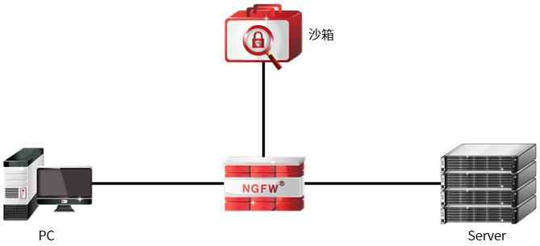

APT
APT（Advanced Persistent Threat，高级持续性威胁）是一种以商业和政治为目的的网络犯罪类别，通常使用先进的攻击手段对特定目标进行长期持续性的网络攻击，具有长期经营与策划、高度隐蔽等特性。APT攻击不会追求短期的收益或单纯的破坏，而是以步步为营的渗透入侵策略，低调隐蔽地攻击每一个特定目标，不做其他多余活动来打草惊蛇。
典型的APT攻击过程，大约分为五步：
第一步，攻击者会盗用一个企业的供应商或者合作伙伴的账号，从而达到访问企业内网的目的；
第二步，攻击者利用自制的攻击工具，在企业的某一台服务器或PC上种下木马病毒；
第三步，该木马会在企业网络中不断渗透，寻找企业关键的数据库，盗取包括企业核心数据，员工ID、信用卡密码、手机号等重要信息；
第四步，通过FTP、邮件、甚至是更加隐秘的方式，不断地把这些数据发送给攻击者；
第五步，整个攻击过程大约持续数月，甚至是半年或一年。
这五步相互关联，也就形成了APT攻击的“生命链条”。而其中最关键的当属第二步，即攻击者利用未知漏洞攻陷企业服务器或PC，该攻击方式隐蔽性强，传统的入侵防御系统、防病毒系统、以及web应用防火墙等均无法感知；而当攻击者完成“突破”之后，还要经历渗透（包括提权与迁移）、窃听、偷数据等过程，即APT攻击需要一定的持续时间。由此不难看出，如果能够打破APT攻击隐蔽性和持续性这两个特性，也就能斩断其“生命链条”，即可有效阻止APT攻击，而沙箱系统就具备这样的能力。
沙箱
沙箱为一些不可靠的程序提供试验而不影响系统运行的环境。对于基于未知漏洞的APT攻击，传统的基于签名的检测方式确实难以识别，而通过沙箱所打造的虚拟运行环境，我们即可通过其“行为”来判断一个文件或一个访问等是恶意的还是善意的，从而有效阻止APT攻击。举例来说，当一个文件在虚拟的沙箱中运行时，如果我们发现其修改了注册表、删除了文件，或是自身创造出了新的文件，亦或是试图访问恶意网站，并下载一些病毒和木马等等，那么即可确定这个文件是恶意的，即使我们现在没有其特征码，也可以防御它。与此同时，我们还可提取其“特征码”，在第一时间封堵这一未知威胁。
通过上述介绍我们不难看出，沙箱的确是目前阻止APT攻击的最有效方法之一，NGFW的APT功能则正是利用了沙箱的以上优点，根据沙箱中的检测结果，将风险文件的特征码记录到特征库中，以便在以后的扫描过程中利用记录的特征码识别APT攻击，并进行相应的处理。
NGFW实现防APT攻击原理
NGFW通过联动第三方沙箱，支持DGA检测、恶意加密流量检测、隐蔽信道检测、APT检测、扫描探测检测、暴力破解检测和弱口令检测。接下来以下方拓扑为例，介绍NGFW联动沙箱服务器防APT攻击的具体流程。

1)用户访问服务器文件的流量经过NGFW时，如果该流量命中启用“高级威胁防护”攻击的访问控制规则（访问控制策略启用“高级威胁防护”操作请参见 访问控制），NGFW根据“APT工作模式（深度模式/智能模式）”，决定是否将文件发送给沙箱服务器。
2)沙箱服务器接收到文件后，对文件进行APT检测并计算文件的MD5值，最后将文件的检测结果信息（MD5值。判定结果、发送时间）响应给NGFW。说明：恶意文件返回MD5值，正常文件不返回MD5值。
3)NGFW接收到文件的APT检测信息后，将恶意文件MD5值与动态MD5库中的MD5值进行匹配，如果动态MD5库中无该MD5值，将恶意文件MD5值存储于动态MD5库中；如果动态MD5库中存在与该文件MD5值相同的MD5值，则不会重新存储。
4)后续用户访问服务器文件经过NGFW时，NGFW计算文件的MD5值，并与动态MD5库进行比较。能够匹配成功则代表此文件为恶意文件，NGFW依据APT动作对用户访问APT攻击文件行为执行允许、告警或阻断动作。
高级威胁防护相关配置包括：
l白名单
l弱口令